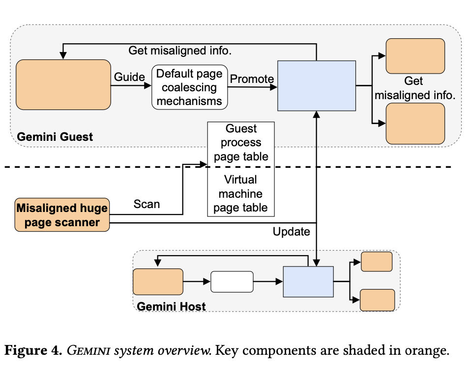
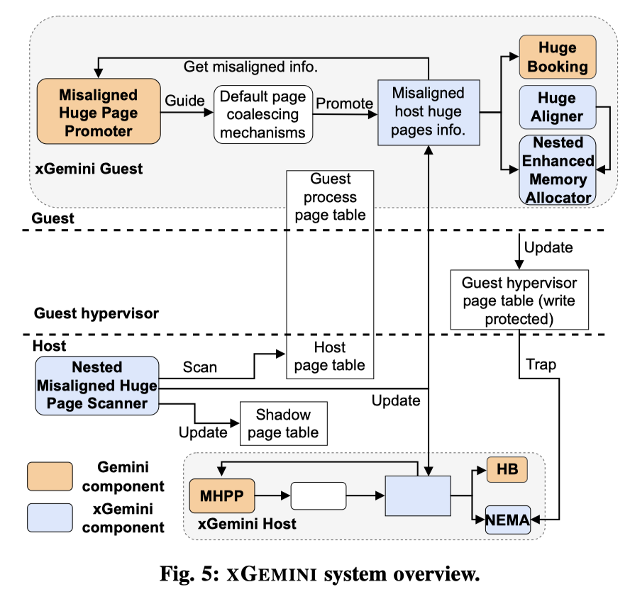

- problem definition
- motivation
- design overview
- detailed solutions and implementations
- evaluation methods and results
- related works
Paper summary
This paper aims to address the high TLB miss rate and slow address translation problem
caused by discrepancies in page sizes and misalignment across host and guests
under nested virtualization environment.
Problem definition
Discrepancies in page sizes and misalignment across host and guests diminish the effectness of huge pages in reducing TLB misses and speedup address translation.
Contribution
Comments
Abstract
- The problem definition is very clear, i.e. here.
- It's unclear what is the connection to nested virtualization.
- Even in nested VM, address translation remains two-dimensional. Will the consequences of page size discrepancies be more severe?
- The main technical contribution is not very clear.
- How exactly does xGemini improves shadow paging?
- Is it due to solving “proper alignment”? How?
Introduction
- It's unclear what kind of nested virtualization the paper is takling about until section 4.2. It's suggested to clearly state this in section 1, i.e. EPT-on-EPT defined in reference 9.
- It's unclear what are the precise definitions of the terminology used, such as nested virtualization, SPT, .. For example, paragraph 4 is actually talking about the SPT02 (GVA->HPA) of shadown-on-shadow nesting does not exist in EPT-on-EPT nesting. While paragraph 8 is talking about EPT02 when referring to SPT.
Nested Virtualization (section 4.2)
Three main challenges
- Interposed hypervisor interfer with host/guest page align coordination
In addition, changing to the Interposed hypervisor might not be viable- Interposed hypervisor use base pages while both guest and host use hugepage
- i.e. 1x guest hugepage -> 512x hypervisor basepage -> 1x host hugepage
- Application alignment mismatch
- Is challenge 3 unique to nested environment? Has it been solved by Gemini already?
Design (section 5)
 
Major components:
- HA: huge aligner. Allocate the entire hugepage instead a base page when a virtual address is touched.
- NEMA: nested enhanced memory allocator. Ensure GVA/GPA/HPA alignend to the same offset after hugepage boundaries when a guest page fault occurs. This ensures only one TLB entry can be shared by the entire hugepage the faulting address in.
- HB: huge booking
- MHPP: misaligned huge page promoter
- NMHPS: nested misaligned huge page scanner
- Figure 7 still shows EMA, it's unclear how NEMA is different from it.
- For the description of NEMA, it's unclear how the offset to hugepage boundary in GPA space can be passed to HPA space without the awareness and interaction with GHPA space. The author should add a detailed explantion on the process of intercepting "guest hypervisor page table" updates, merging "host page table" info, getting the final faulting HPA and calculating desired "shadow page table" entry. And explain in detail how the offset invariant is kept, despite "guest hypervisor page table" could set up a GPA-GHPA mapping with an offset to an arbitrary boundary.
Evaluation (section 6)
Objectives:
- Improve throughput-oriented applicaiton performance (PARSEC suite)
- Improve mean and tail latency of latency-sensitive workloads (Tailbench suite)
- Applicability and overhead (Xapian, Ferret)
- What are the LoC changes made to Linux and KVM when implementing Gemini and xGemini? How many LoC are changed when implementing xGemini on Gemini?
- In table 1, why is vanilla kernel used in L2 guest instead of xGemini? The exact nesting settings are also unclear, e.g. for section 6.1 and 6.2, a three by three table should be provided to clearly show which kernel/hypervisor is used at each level for each setting.
- How are TLB misses calculated?
- Why is there no memory fragmentation or bloating experiments? As reported by prior works, such as reference 1, Igens, hugepages leads to a 69% memory usage increase in redis, which is similar to masstree/silo used here. The arguments provided in section 5.2 cannot justify why such a well-known issue can be skipped.
- Are there any micro benchmarks showing the proportion of memory fully backed by hugepages end-to-end or at each layer?
- Is it possible to provide VMEXIT and pagefault count comparison for each benchmark?
- For figure 8, masstree benchmark: why is that the TLB misses of Gemini and xGemini are nearly identical but xGemini's throughput show visible improvement?
- For figure 8, sphinx benchmark: why does xGemini achieve better performance with more TLB misses compared to Gemini?
- For figure 9, why does Silo behave significantly differently when compared to others?
Misc questions
- Are nested VMs common? Why would one choose a nested VM compared to other isolated runtime-like containers?
- What kind of nested virtualization are we talking about? Are we talking about EPT-on-EPT or Shadow-on-EPT according to the terms defined in reference 9 section 3.3? Section 1 refers to nested virtualization as Shadow-on-EPT or Shadow-on-Shadow. However, figure 4 refers to nested virtualization as EPT-on-EPT.
- System overview figure is very confusing
- It's unclear which subsystem each component belongs to in Linux and KVM or a conceptual OS and hypervisor.
- It's unclear when each component is needed, e.g. at boot/allocation time, first touch or as background routines.
- It's unclear which address space each component is concerned about.
- It's unclear how the hugepage alignment and size propagate or are ensured all the way down from the guest userspace.
- How is the fragmentation problem solved? What's the space overhead?
- Misuse of terminology